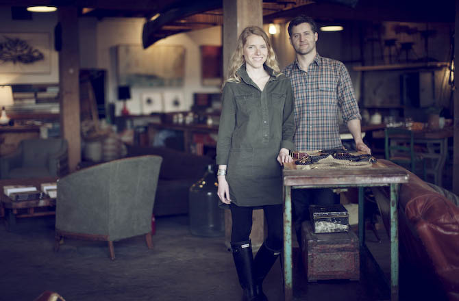

In the Winter of 2011, Robert and Jocelyn Rahm had a carpe diem moment and decided that life was too short to not pursue their dream. With a passion for great design and the desire to support local makers, Beam & Anchor was born. They found the ideal venue for their vision in a handsome yet neglected 7,000 square foot building amidst an industrial landscape in North Portland. Along the way, they met Currie Person, who has since become an integral partner in the creation of the retail experience. The Beam & Anchor store is comprised of an evolving selection of carefully curated pieces, including custom-made furniture, art, ceramics, jewelry, home goods, and beautifully crafted items for travel, work, and living.
Beam & Anchor celebrates community, innovation, friendship, and quality goods. The B&A building is home to all of these things. A talented and diverse group of makers and their workshops make up the top floor and the bottom floor houses Beam & Anchor’s retail space, which features thoughtfully curated items from both new and vintage sources. The 100 year old farm table in our shop kitchen has become a gathering place for collaboration, bread breaking and story telling. We find as many excuses as we can to welcome the community into our space with the intention of fostering the exchange of ideas, the appreciation of craft and good, old-fashioned fun.